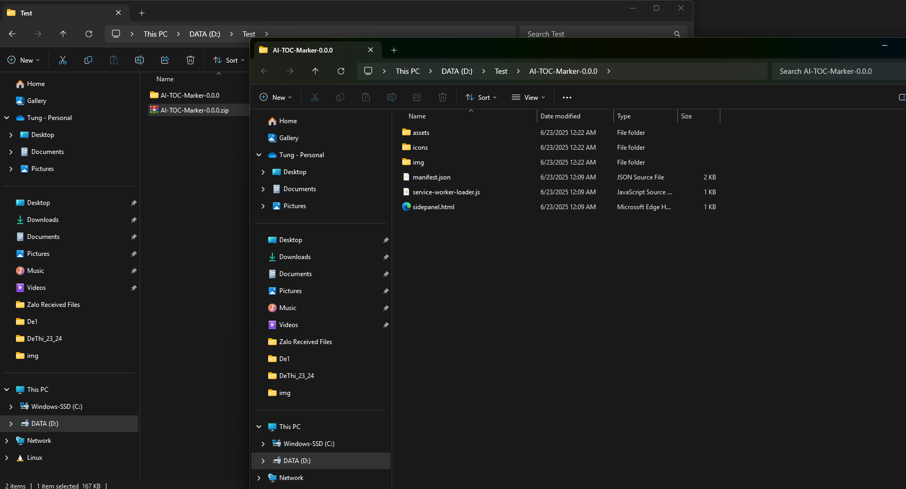

1
Tải về và giải nén AI TOC Marker
Bước đầu tiên là tải file ZIP từ GitHub và giải nén để chuẩn bị cài đặt
Chi tiết thực hiện:
- Truy cập trang GitHub Releases
- Tải file
AI-TOC-Marker-x.x.x.zipvề máy - Click chuột phải vào file ZIP → chọn "Giải nén tất cả..."
- Chọn thư mục đích và nhấn "Giải nén"
Mẹo: Nên giải nén vào thư mục dễ tìm như Desktop hoặc Documents

File ZIP sau khi tải về và quá trình giải nén